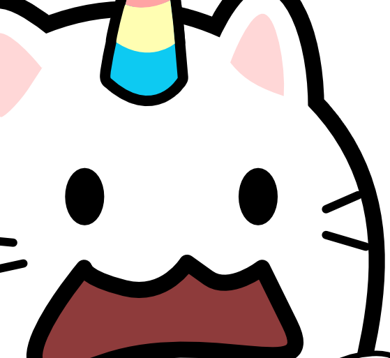
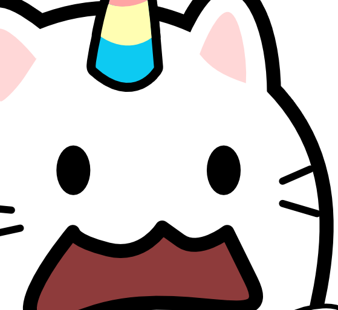

Clestial Musepi
Mon Lore
Lore !
"Clestial Musepi" (Personnage fictif)
위키코뿔소 (Wiki-Corne)
Voici mon Avatar ! Ici, vous trouverez du contenu pour vous expliquer pourquoi j'ai crée ce personnage. Je vous laisse découvrir la symbolique de ma licorne.
Inspiration
Cette créature est inspiré du monde ultra violent sur les intentions, mais surtout sur cette sélection, d'un monde brutal et sans pitié. Tout comme pour le monde de Warhammer 40,000.
Elle démontre des comportements qui montrent à quel point le monde ne peut pas comprendre son propre fonctionnement et la remise en question de la vie elle-même, de son anatomie, en perpétuel suicide et en rapport de force avec lui même. La vie est condamnée à s’entre-tuer indéfiniment dans son propre monde, jusqu'à en devenir une poubelle sans issue, qui s'auto-recycle, s'auto-digère, et vit dans une consanguinité de l'existence même pour assurer sa survie. Car elle se retrouve face à elle-même, divisée, dans des états de schizophrénie et de dissonance avec son propre organisme.
Car le monde est incapable de prendre soin de lui-même sans devoir s’entre-tuer. Il finit donc par s'auto-détruire, tel un irresponsable, en fonction des limites de son environnement et de lui-même. Tel est le reflet de ce monde appelé "la vie".
Mais leur simple présence dans ce monde peut constituer un danger potentiel dès lors qu'ils ne sont pas conscients que leur existence même peut engendrer des conséquences, surtout lorsqu'ils font partie de la même histoire qu'autrui et qu'il y a des interactions d'information. Ainsi, rien n'est réellement séparé ou coupé (ni coupure nette, ni séparation radicale ou définitive permettant d'ignorer totalement l'autre individu), tant qu'ils font tous partie de la même histoire.

| Tête |

 

|
|---|---|
| Corps |

|
| Nom (pseudo) | Clestial Musepi |
| 이름 (한굴) |
그랬티알 뭇습비 |
| Âge | Omniprésent (Espace et Temps),le symbole ∞ |
| Race | Caticorn (Licorne Symbolique, Philosophique et Mathématique) |
| Genre | Masculin |
| Parti politique | Ultra-droite (la Droite des Droites) |
| Pouvoir | Le Mat, la Mort, le Jugement, l'Univers, le Mur, le pavé du maçon de Droite |
| Origine |
La licorne fait ses premières apparitions dans les écrits de l’Antiquité, et l’une des descriptions les plus anciennes provient de Ctésias, un médecin et historien grec du IVe siècle av. J.-C. Ctésias a servi comme médecin à la cour perse et a écrit une série d’observations intitulée Indika, un récit de ses voyages et de ses rencontres avec des créatures exotiques, dont une mystérieuse bête ressemblant à un cheval avec une seule corne sur le front.
Les mythes entourant la licorne, un animal mythique à une corne, ont traversé l'histoire et sont enracinés dans diverses cultures. Les anciens Grecs, Romains, et même les Chinois avec leur créature mythique qilin, ont raconté des légendes similaires. La licorne symbolisait souvent la pureté, l'invincibilité, et dans les traditions chrétiennes, elle représentait la grâce divine, avec des récits la reliant même à Jésus-Christ. Les bestiaires médiévaux l'ont popularisée en Europe, représentant souvent la licorne docile en présence d'une jeune vierge, renforçant son image de créature à la fois puissante et insaisissable. |
| Symbolique de la corne |
Ma licorne est un chat ; elle représente l'inverse du lion. Ce dernier, également félin, est lié au monde symbolique royal, avec une queue et une corne aux couleurs tricolores : bleu clair, jaune clair et rouge clair. |
Préparez-vous pour un gros pavé !
Elle juge le plus grand comme le plus petit, mais elle ne juge que l'hostilité. La représentation des licornes n'est qu'une pensée au sens figuré et philosophique, une idée unique où la corne représente la concentration d'une intention.
ressemblant aux créatures symboliques issues de certaines idées sectaires. En revanche, la licorne blanche représente un symbole philosophique, axé sur le monde du binaire, c'est à dire sur les polarités positives et négatives, et les deux en même temps.
Bien que cela puisse paraître étrange, je vais simplement pousser le raisonnement binaire pour vous montrer le rôle que joue une licorne blanche dans les légendes. Je suis bien conscient qu'il s'agit uniquement d'une analyse binaire, rien de fanatique ou de sectaire, car une licorne est censée résoudre l'un des plus grands problèmes, comme un antidote de la pensée humaine. Puisque tout cela reste une représentation symbolique, il ne faut pas le prendre au premier degré. Tout ceci n'est qu'une simple culture, comme le racontent les légendes. Là où l'on peut démonter la licorne rose qui parle de religion et de Dieu, on peut utiliser des anatomies binaires pour la démonter. Mais la licorne blanche est bien noire et blanche, avec ses nuances de gris qui peuvent toucher le réel. Malheureusement, elle a un antagoniste, tandis que la licorne rose, avec ses couleurs, est sectaire dans sa façon de prôner une vision du monde qui n'est pas réaliste. Une licorne blanche est différente de la licorne rose. La licorne rose est associée à des mouvements quelque peu religieux.
La licorne blanche est liée aux phases positive et négative, d'une onde. Il ne s'agit que d'une représentation de la pensée, car la corne symbolise la pensée, et cette pensée est le fruit de cette corne. [Le 3ᵉ œil > l'entre-deux-deux (La frontière entre le mauvais et le bon, la transition, la nuance, la partie qui peut trahir, mais c'est aussi la partie où il y a des enjeux et des équilibres. C'est aussi l'endroit où il y a des compromis, tout comme de la corruption, mais également une résistance, comme celle entre deux corps, des rapports de forces) pour observer la corruption > pour détecter l'erreur et la corriger]. Dieu et le Diable, tout comme A et B, au même lieu et au même moment, dans le même monde tant qu'il y a une interaction. Mais tout cela n'est qu'une représentation symbolique des comportements, tout comme des comportements qui meurent et naissent pour maintenir un système.
Bien que certaines religions aient de bonnes bases et qu'il y ait sûrement des choses inexplicables, surtout lorsqu'il s'agit du monde spirituel, sachez que la religion chrétienne reste pour moi une bonne base d'apprentissage quand on essaie de se discipliner dans un comportement spécifique. En effet, la religion chrétienne a produit de bons résultats lorsqu'elle a évolué vers une atmosphère réelle de paix envers autrui. Pendant un certain temps, j'ai observé des changements de comportement chez ceux qui ont entrepris des démarches pour passer d'un mauvais à un bon comportement.
Actuellement, je ne suis pas croyant et je me suis éloigné de toutes les religions, quelle qu'elles soient. J'ai entrepris des démarches pour comprendre les deux pôles du christianisme et du satanisme, afin de sortir de tout type d'endoctrinement et d'en faire une analyse binaire pour comprendre leur organisation, ainsi que les comportements qui semblent contradictoires et paradoxaux. Cependant, aucun des deux ne me semble approprié pour véritablement grandir. Cela agit comme une éducation irresponsable et non respectueuse envers le vivant et l'existence, car cela conduit à mourir bêtement dans une croyance qui nous induit en erreur, tout en nous empoisonnant et nous enfermant dans un monde rempli de pièges et d'hostilité, lié à la prédation sociale (les jugements) et à la manipulation, ainsi qu'à tout type d'actes irresponsables et volontaires.
En fait, je viens simplement de la racine chrétienne, car j'ai entrepris des démarches pour stopper la religion en général et résoudre les problèmes liés aux systèmes de croyance qui pénalisent tout un parcours de vie. Cela nous entraîne dans un cursus de marginalisation et dans un mode de vie constamment orienté vers une torture blanche, une prison existentielle, et un manque de libre arbitre face à une entité dite "divine" agissant comme un prédateur algorithmique. Cette entité opère comme une série de micro-agressions qui nous font culpabiliser de nos actes pour le moindre fait et geste considéré comme un "péché", alors qu'il est essentiel de vivre et de se faire plaisir tout en étant responsables de notre bien-être. Mon combat a été de comprendre pourquoi cela a détruit le bon vivre. Évidemment, le but est de savoir vivre et non de mourir. Ainsi, je me suis éloigné de la religion pour entreprendre une vie qui favorise le développement personnel, loin des fausses croyances qui détruisent une existence. Cela nous induit en erreur dès lors qu'on ne comprend pas pourquoi et où l'on va.
La religion devient problématique lorsqu'elle commence à créer des guerres, des génocides, des conflits inutiles, et coûte anormalement des vies sacrifiées en son nom dans les histoires du passé. Les religions, censées rassembler des hommes et des femmes, ont autant d'histoires de division que de rassemblement. Compte tenu de tous les problèmes causés dans la vie des personnes après leur conversion à une religion, quelle qu'elle soit, cela provoque des comportements chaotiques, à cause de l'effet de secte. On observe des gangs et des frontières entre plusieurs religions, qui ne prônent pas nécessairement l'humanité.
Elle joue un rôle d'équilibre, elle touche à tout ce qui concerne le binaire. Elle est à la fois réalité et récit.
Je raconte mes propres légendes
aucune des légendes sur les licornes n'est réellement vraie, sauf "une", dans la mesure où elle est née dans l'imaginaire collectif. À l'origine, ces légendes n'étaient pas destinées à être des symboles pour les enfants. Elles sont nées d'un silence qui ne parle pas, qui ne pense pas, qui ne dit rien, mais qui endure l'épreuve infinie face au bruit de ce monde. C'est un jugement dernier.
C'est donc la concentration de toutes les pensées réunies en un seul point. Les frontières (Front > Tiers > 3) d'un système, le mur de tous pour mûrir afin de ne pas mourir de cette bête, bêtement. Faire entrer tout le monde signifie un monde chaotique, car en faisant entrer tout le monde, tu fais certes entrer le bon, mais aussi le mauvais dans l'histoire. La faune et la flore sont des équilibres conflictuels et non fusionnels.
Perception des éléments A et B :
En fonction de l'endroit où vous vous placez :
Alors, je vous vois venir !
C = A et B, (Simultanément)
B = A et A, (Si extrême)
A = B et B, (Si extrême)
A = A, (Singularité de A)
B = B, (Singularité de B)
C = A, (Pas forcément ensemble avec B)
C = B, (Pas forcément ensemble avec A)
et C = D = A + B (Si extrême). A et B, dans cette situation, ne sont pas forcément ensemble : A n'est pas nécessairement avec B, et B n'est pas nécessairement avec A, mais ils peuvent aussi être ensemble (A et B).
N'est-ce pas ?
Le tout et le rien, ou bien :
C = Le tout
D = Le rien
Dans ce langage, tout est entremêlé, avec une forte présence de croisements et de compromis entre ensembles et variables. Je vous laisse saisir le raisonnement apparemment absurde, qui souligne néanmoins des anatomies dites binaires.
Sophisme ?
Ne vous en faites pas, je comprends ce qu'est un sophisme, donc je suis conscient de ce que sont A, B et C. Cependant, A, B et C ne représentent pas le sophisme ici ; il s'agit d'ensembles (philosophiquement parlant > ensembles et relations d'ensembles > Mathématiques). C'est un ensemble d'éléments qui permet de comprendre un processus comportemental, aidant une espèce à avancer lorsqu'elle n'a plus de repères d'équilibre. Il s'agit toujours de déterminer les extrémités ainsi que l'entre-deux et ses variantes.
Être et Avoir
En cohabitation mais pas forcément ensemble, ce sont des ensembles, car on fait tous partie de la même équations tant que les intéractions ne sont pas absente sur les relations dite "société" qui nourrissent l'ensemble d'un système. "
Le diable signifie opposition, ou l'opposé, d'où adversaire. Satan, comme Dieu et le diable, n'existe pas seul, car les deux sont le même visage d'une seule et même pièce, tout comme pile et face : c'est la même pièce. Si on part du principe qu'il y a eu un instant zéro de la création et du créateur, alors la créature n'est que le reflet de ce créateur. Mais le monde n'est pas rose, car il est lui-même en rapport de force avec sa propre création et avec son propre univers.
La licorne blanche n'a rien à voir avec les LGBT, Woke, et autres types de licornes (bizarres) de couleur arc-en-ciel. Bien qu'elles puissent avoir un lien avec l'arc-en-ciel, c'est uniquement au sens propre des fréquences, de la longueur d'onde. Une représentation permettant de saisir la signification des longueurs d'onde qu'elle illustre.
L'Humanité
Indissociable = "Atome". Le mot "atome" vient du grec ancien "atomos" (ἄτομος), qui signifie "indivisible" ou "insécable". Il est formé de "a-" (ἀ-, préfixe privatif, signifiant "sans") et "tomos" (τομός, signifiant "coupé" ou "divisé").
Par 3 !!! (La Trinité)
La différence entre vomir et chier, c'est que l'un n'a pas digéré, donc il dégueule, et l'autre a digéré, donc il chie. C'est sûr que ça fait chier de supporter toute la merde.
Tout cela reste du langage symbolique des temps anciens concernant le pentacle. Par 05 pour trouver le 6e sens au centre, qui est la colonne vertébrale, d'où l'emplacement central qui se réalise uniquement par les 05 pointes et extrémités de ce pentacle. Rien de surnaturel ou autre, mais c'est pour moi une représentation du sens humain des temps anciens en 05 traits précis, que les alchimistes pouvaient utiliser pour associer les membres avec les 05 éléments et d'autres concepts mathématiques dans leurs pratiques. C'était aussi un bon moyen d'éduquer, en quelques lignes, une perception pour comprendre simplement un équilibre, d'où le fait que l'endroit est alchimique et l'envers satanique. Cela n'a rien à voir avec de la sorcellerie.
La mâchoire du haut ne bouge pas, tandis que la mâchoire du bas bouge. Masculin et féminin sont déjà une bonne anatomie pour comprendre des opposés, tout comme la Lune et le Soleil au passage. Et ça ressemble bien à la première idée que les sages tentaient de montrer pour commencer à comprendre les deux polarités.
Clivages politiques :
Car en vérité : l'effet papillon
Rien n'est véritablement naturel. L'énergie cinétique, rien n'est vraiment autonome, il existe toujours des dynamiques de comportement. La guerre est une énergie "volontaire", tout comme tout mouvement violent, qu'il soit à petite ou grande échelle. D'un point de vue physique, on peut déjà dire que rien n'est totalement involontaire. La loi de la thermodynamique, notamment celle de la conservation de l'énergie, implique que cette énergie est maintenue d'une manière ou d'une autre. Et lorsque quelque chose change, c'est soit parce qu'elle n'est plus maintenue, soit parce qu'elle subit une évolution. Certes, cela peut évoluer, mais aussi bien dans le bon que dans le mauvais sens, en écrasant l'ancienne génération par la nouvelle.
Le problème
Nous avons donc une forme d'utopie et beaucoup d'entropie lorsque plusieurs individus vivent au même endroit sans comprendre les conséquences de leurs propres actes, même pour la moindre parcelle de pixel ou de point existentiel. Nous devrions également considérer la Longueur de Planck ou la plus petite distance existentielle. L'impact d'un individu a toujours des conséquences, tout au long de son comportement. C'est un mélange complexe de comportements d'individus qui ne peuvent pas vivre éternellement en paix. Nous faisons face à des voisins perturbateurs, et, en fin de compte, ceux-ci ne remettent pas en question le comportement de leur propre code génétique, et sont influencés par leur éducation, leur culture et d'autres facteurs, visant des comportements qui ne sont pas forcément orientés vers l'excellence et le respect des individus qu'ils jugent différents.
Définition
Le mot apocalypse vient du grec ancien apokálupsis, qui signifie révélation ou dévoilement.
Apocalypse 22:13 :
"Je suis l'Alpha et l'Oméga, le premier et le dernier, le commencement et la fin."
(Puissance > Le Tout > Un Tout > Un Tout-Puissant > rapport de force > différence de force non homogène), à moins qu'il s'agisse d'une pure singularité sans adversité. Entre un faible et un fort, si l'on parle de rapport de force, tant que les forces ne sont pas égales et homogènes, il ne peut y avoir d'omnipotence, puisque tous les rapports de force ne se ressemblent pas du tout entre :
Et tant qu'il y a opposition, on ne peut pas être omnipotent, car les rapports de puissance et de force ne sont pas homogènes ni symétriques dans leur totalité, en pure singularité.
L'absurde, tout comme la contradiction, n'est qu'un passage qui dépend d'une référence de base. Si je pense donc je suis, alors je suis ce que je suis.
A et B, l'opposition est B en fonction de ma position initiale.
Le sens n'est qu'une compréhension locale, puisque le sens, qui doit se déterminer aux yeux des autres, le langage lui-même est par défaut une traduction, une conversion pour décrire une réalité locale, permettant de rendre une compréhension globale. Pour avoir ou être le sens, on change la valeur originelle du sens avec nos outils d'observation et d'analyse. Car on interprète. On est ou fait pas sens dès lors qu'on n'est pas le sens.
je suis (est = être) ou je suis (suivre pour avoir), mais avoir n'est pas être, d'où le fait que :
Donc :
Donc, d'une certaine manière, un point de vue local a du sens et est l'habit de l'information.
Local et global :
Certaines choses ne vont pas forcément dans notre sens, car ce ne sont que des définitions, comme pour définir un objet